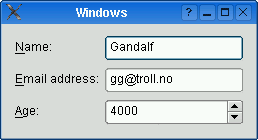
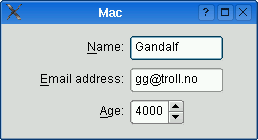
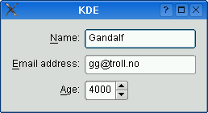
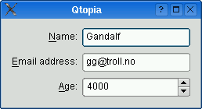

QFormLayout Class
The QFormLayout class manages forms of input widgets and their associated labels. More...
| Header: | #include <QFormLayout> |
| qmake: | QT += widgets |
| Since: | Qt 4.4 |
| Inherits: | QLayout |
This class was introduced in Qt 4.4.
Public Types
| TakeRowResult | |
| enum | FieldGrowthPolicy { FieldsStayAtSizeHint, ExpandingFieldsGrow, AllNonFixedFieldsGrow } |
| enum | ItemRole { LabelRole, FieldRole, SpanningRole } |
| enum | RowWrapPolicy { DontWrapRows, WrapLongRows, WrapAllRows } |
Properties
|
|
Public Functions
| QFormLayout(QWidget *parent = nullptr) | |
| virtual | ~QFormLayout() |
| void | addRow(QWidget *label, QWidget *field) |
| void | addRow(QWidget *label, QLayout *field) |
| void | addRow(const QString &labelText, QWidget *field) |
| void | addRow(const QString &labelText, QLayout *field) |
| void | addRow(QWidget *widget) |
| void | addRow(QLayout *layout) |
| QFormLayout::FieldGrowthPolicy | fieldGrowthPolicy() const |
| Qt::Alignment | formAlignment() const |
| void | getItemPosition(int index, int *rowPtr, QFormLayout::ItemRole *rolePtr) const |
| void | getLayoutPosition(QLayout *layout, int *rowPtr, QFormLayout::ItemRole *rolePtr) const |
| void | getWidgetPosition(QWidget *widget, int *rowPtr, QFormLayout::ItemRole *rolePtr) const |
| int | horizontalSpacing() const |
| void | insertRow(int row, QWidget *label, QWidget *field) |
| void | insertRow(int row, QWidget *label, QLayout *field) |
| void | insertRow(int row, const QString &labelText, QWidget *field) |
| void | insertRow(int row, const QString &labelText, QLayout *field) |
| void | insertRow(int row, QWidget *widget) |
| void | insertRow(int row, QLayout *layout) |
| QLayoutItem * | itemAt(int row, QFormLayout::ItemRole role) const |
| Qt::Alignment | labelAlignment() const |
| QWidget * | labelForField(QWidget *field) const |
| QWidget * | labelForField(QLayout *field) const |
| void | removeRow(int row) |
| void | removeRow(QWidget *widget) |
| void | removeRow(QLayout *layout) |
| int | rowCount() const |
| QFormLayout::RowWrapPolicy | rowWrapPolicy() const |
| void | setFieldGrowthPolicy(QFormLayout::FieldGrowthPolicy policy) |
| void | setFormAlignment(Qt::Alignment alignment) |
| void | setHorizontalSpacing(int spacing) |
| void | setItem(int row, QFormLayout::ItemRole role, QLayoutItem *item) |
| void | setLabelAlignment(Qt::Alignment alignment) |
| void | setLayout(int row, QFormLayout::ItemRole role, QLayout *layout) |
| void | setRowWrapPolicy(QFormLayout::RowWrapPolicy policy) |
| void | setSpacing(int spacing) |
| void | setVerticalSpacing(int spacing) |
| void | setWidget(int row, QFormLayout::ItemRole role, QWidget *widget) |
| int | spacing() const |
| QFormLayout::TakeRowResult | takeRow(int row) |
| QFormLayout::TakeRowResult | takeRow(QWidget *widget) |
| QFormLayout::TakeRowResult | takeRow(QLayout *layout) |
| int | verticalSpacing() const |
Reimplemented Public Functions
| virtual void | addItem(QLayoutItem *item) override |
| virtual int | count() const override |
| virtual Qt::Orientations | expandingDirections() const override |
| virtual bool | hasHeightForWidth() const override |
| virtual int | heightForWidth(int width) const override |
| virtual void | invalidate() override |
| virtual QLayoutItem * | itemAt(int index) const override |
| virtual QSize | minimumSize() const override |
| virtual void | setGeometry(const QRect &rect) override |
| virtual QSize | sizeHint() const override |
| virtual QLayoutItem * | takeAt(int index) override |
Detailed Description
QFormLayout is a convenience layout class that lays out its children in a two-column form. The left column consists of labels and the right column consists of "field" widgets (line editors, spin boxes, etc.).
Traditionally, such two-column form layouts were achieved using QGridLayout. QFormLayout is a higher-level alternative that provides the following advantages:
- Adherence to the different platform's look and feel guidelines.
For example, the macOS Aqua and KDE guidelines specify that the labels should be right-aligned, whereas Windows and GNOME applications normally use left-alignment.
- Support for wrapping long rows.
For devices with small displays, QFormLayout can be set to wrap long rows, or even to wrap all rows.
- Convenient API for creating label--field pairs.
The addRow() overload that takes a QString and a QWidget * creates a QLabel behind the scenes and automatically set up its buddy. We can then write code like this:
QFormLayout *formLayout = new QFormLayout; formLayout->addRow(tr("&Name:"), nameLineEdit); formLayout->addRow(tr("&Email:"), emailLineEdit); formLayout->addRow(tr("&Age:"), ageSpinBox); setLayout(formLayout);
Compare this with the following code, written using QGridLayout:
nameLabel = new QLabel(tr("&Name:")); nameLabel->setBuddy(nameLineEdit); emailLabel = new QLabel(tr("&Name:")); emailLabel->setBuddy(emailLineEdit); ageLabel = new QLabel(tr("&Name:")); ageLabel->setBuddy(ageSpinBox); QGridLayout *gridLayout = new QGridLayout; gridLayout->addWidget(nameLabel, 0, 0); gridLayout->addWidget(nameLineEdit, 0, 1); gridLayout->addWidget(emailLabel, 1, 0); gridLayout->addWidget(emailLineEdit, 1, 1); gridLayout->addWidget(ageLabel, 2, 0); gridLayout->addWidget(ageSpinBox, 2, 1); setLayout(gridLayout);
The table below shows the default appearance in different styles.
| QCommonStyle derived styles (except QPlastiqueStyle) | QMacStyle | QPlastiqueStyle | Qt Extended styles |
|---|---|---|---|
 |  |  |  |
| Traditional style used for Windows, GNOME, and earlier versions of KDE. Labels are left aligned, and expanding fields grow to fill the available space. (This normally corresponds to what we would get using a two-column QGridLayout.) | Style based on the macOS Aqua guidelines. Labels are right-aligned, the fields don't grow beyond their size hint, and the form is horizontally centered. | Recommended style for KDE applications. Similar to MacStyle, except that the form is left-aligned and all fields grow to fill the available space. | Default style for Qt Extended styles. Labels are right-aligned, expanding fields grow to fill the available space, and row wrapping is enabled for long lines. |
The form styles can be also be overridden individually by calling setLabelAlignment(), setFormAlignment(), setFieldGrowthPolicy(), and setRowWrapPolicy(). For example, to simulate the form layout appearance of QMacStyle on all platforms, but with left-aligned labels, you could write:
formLayout->setRowWrapPolicy(QFormLayout::DontWrapRows); formLayout->setFieldGrowthPolicy(QFormLayout::FieldsStayAtSizeHint); formLayout->setFormAlignment(Qt::AlignHCenter | Qt::AlignTop); formLayout->setLabelAlignment(Qt::AlignLeft);
See also QGridLayout, QBoxLayout, and QStackedLayout.
Member Type Documentation
enum QFormLayout::FieldGrowthPolicy
This enum specifies the different policies that can be used to control the way in which the form's fields grow.
| Constant | Value | Description |
|---|---|---|
QFormLayout::FieldsStayAtSizeHint | 0 | The fields never grow beyond their effective size hint. This is the default for QMacStyle. |
QFormLayout::ExpandingFieldsGrow | 1 | Fields with an horizontal size policy of Expanding or MinimumExpanding will grow to fill the available space. The other fields will not grow beyond their effective size hint. This is the default policy for Plastique. |
QFormLayout::AllNonFixedFieldsGrow | 2 | All fields with a size policy that allows them to grow will grow to fill the available space. This is the default policy for most styles. |
See also fieldGrowthPolicy.
enum QFormLayout::ItemRole
This enum specifies the types of widgets (or other layout items) that may appear in a row.
| Constant | Value | Description |
|---|---|---|
QFormLayout::LabelRole | 0 | A label widget. |
QFormLayout::FieldRole | 1 | A field widget. |
QFormLayout::SpanningRole | 2 | A widget that spans label and field columns. |
See also itemAt() and getItemPosition().
enum QFormLayout::RowWrapPolicy
This enum specifies the different policies that can be used to control the way in which the form's rows wrap.
| Constant | Value | Description |
|---|---|---|
QFormLayout::DontWrapRows | 0 | Fields are always laid out next to their label. This is the default policy for all styles except Qt Extended styles. |
QFormLayout::WrapLongRows | 1 | Labels are given enough horizontal space to fit the widest label, and the rest of the space is given to the fields. If the minimum size of a field pair is wider than the available space, the field is wrapped to the next line. This is the default policy for Qt Extended styles. |
QFormLayout::WrapAllRows | 2 | Fields are always laid out below their label. |
See also rowWrapPolicy.
Property Documentation
fieldGrowthPolicy : FieldGrowthPolicy
This property holds the way in which the form's fields grow
The default value depends on the widget or application style. For QMacStyle, the default is FieldsStayAtSizeHint; for QCommonStyle derived styles (like Plastique and Windows), the default is ExpandingFieldsGrow; for Qt Extended styles, the default is AllNonFixedFieldsGrow.
If none of the fields can grow and the form is resized, extra space is distributed according to the current form alignment.
Access functions:
| QFormLayout::FieldGrowthPolicy | fieldGrowthPolicy() const |
| void | setFieldGrowthPolicy(QFormLayout::FieldGrowthPolicy policy) |
See also formAlignment and rowWrapPolicy.
formAlignment : Qt::Alignment
This property holds the alignment of the form layout's contents within the layout's geometry
The default value depends on the widget or application style. For QMacStyle, the default is Qt::AlignHCenter | Qt::AlignTop; for the other styles, the default is Qt::AlignLeft | Qt::AlignTop.
Access functions:
| Qt::Alignment | formAlignment() const |
| void | setFormAlignment(Qt::Alignment alignment) |
See also labelAlignment and rowWrapPolicy.
horizontalSpacing : int
This property holds the spacing between widgets that are laid out side by side
By default, if no value is explicitly set, the layout's horizontal spacing is inherited from the parent layout, or from the style settings for the parent widget.
Access functions:
| int | horizontalSpacing() const |
| void | setHorizontalSpacing(int spacing) |
See also verticalSpacing, QStyle::pixelMetric(), and PM_LayoutHorizontalSpacing.
labelAlignment : Qt::Alignment
This property holds the horizontal alignment of the labels
The default value depends on the widget or application style. For QCommonStyle derived styles, except for QPlastiqueStyle, the default is Qt::AlignLeft; for the other styles, the default is Qt::AlignRight.
Access functions:
| Qt::Alignment | labelAlignment() const |
| void | setLabelAlignment(Qt::Alignment alignment) |
See also formAlignment.
rowWrapPolicy : RowWrapPolicy
This property holds the way in which the form's rows wrap
The default value depends on the widget or application style. For Qt Extended styles, the default is WrapLongRows; for the other styles, the default is DontWrapRows.
If you want to display each label above its associated field (instead of next to it), set this property to WrapAllRows.
Access functions:
| QFormLayout::RowWrapPolicy | rowWrapPolicy() const |
| void | setRowWrapPolicy(QFormLayout::RowWrapPolicy policy) |
See also fieldGrowthPolicy.
verticalSpacing : int
This property holds the spacing between widgets that are laid out vertically
By default, if no value is explicitly set, the layout's vertical spacing is inherited from the parent layout, or from the style settings for the parent widget.
Access functions:
| int | verticalSpacing() const |
| void | setVerticalSpacing(int spacing) |
See also horizontalSpacing, QStyle::pixelMetric(), and PM_LayoutHorizontalSpacing.
Member Function Documentation
QFormLayout::QFormLayout(QWidget *parent = nullptr)
Constructs a new form layout with the given parent widget.
See also QWidget::setLayout().
[virtual] QFormLayout::~QFormLayout()
Destroys the form layout.
[override virtual] void QFormLayout::addItem(QLayoutItem *item)
Reimplements: QLayout::addItem(QLayoutItem *item).
void QFormLayout::addRow(QWidget *label, QWidget *field)
Adds a new row to the bottom of this form layout, with the given label and field.
See also insertRow().
void QFormLayout::addRow(QWidget *label, QLayout *field)
This is an overloaded function.
void QFormLayout::addRow(const QString &labelText, QWidget *field)
This is an overloaded function.
This overload automatically creates a QLabel behind the scenes with labelText as its text. The field is set as the new QLabel's buddy.
void QFormLayout::addRow(const QString &labelText, QLayout *field)
This is an overloaded function.
This overload automatically creates a QLabel behind the scenes with labelText as its text.
void QFormLayout::addRow(QWidget *widget)
This is an overloaded function.
Adds the specified widget at the end of this form layout. The widget spans both columns.
void QFormLayout::addRow(QLayout *layout)
This is an overloaded function.
Adds the specified layout at the end of this form layout. The layout spans both columns.
[override virtual] int QFormLayout::count() const
Reimplements: QLayout::count() const.
[override virtual] Qt::Orientations QFormLayout::expandingDirections() const
Reimplements: QLayout::expandingDirections() const.
void QFormLayout::getItemPosition(int index, int *rowPtr, QFormLayout::ItemRole *rolePtr) const
Retrieves the row and role (column) of the item at the specified index. If index is out of bounds, *rowPtr is set to -1; otherwise the row is stored in *rowPtr and the role is stored in *rolePtr.
See also itemAt(), count(), getLayoutPosition(), and getWidgetPosition().
void QFormLayout::getLayoutPosition(QLayout *layout, int *rowPtr, QFormLayout::ItemRole *rolePtr) const
Retrieves the row and role (column) of the specified child layout. If layout is not in the form layout, *rowPtr is set to -1; otherwise the row is stored in *rowPtr and the role is stored in *rolePtr.
void QFormLayout::getWidgetPosition(QWidget *widget, int *rowPtr, QFormLayout::ItemRole *rolePtr) const
Retrieves the row and role (column) of the specified widget in the layout. If widget is not in the layout, *rowPtr is set to -1; otherwise the row is stored in *rowPtr and the role is stored in *rolePtr.
See also getItemPosition() and itemAt().
[override virtual] bool QFormLayout::hasHeightForWidth() const
Reimplements: QLayoutItem::hasHeightForWidth() const.
[override virtual] int QFormLayout::heightForWidth(int width) const
Reimplements: QLayoutItem::heightForWidth(int ) const.
void QFormLayout::insertRow(int row, QWidget *label, QWidget *field)
Inserts a new row at position row in this form layout, with the given label and field. If row is out of bounds, the new row is added at the end.
See also addRow().
void QFormLayout::insertRow(int row, QWidget *label, QLayout *field)
This is an overloaded function.
void QFormLayout::insertRow(int row, const QString &labelText, QWidget *field)
This is an overloaded function.
This overload automatically creates a QLabel behind the scenes with labelText as its text. The field is set as the new QLabel's buddy.
void QFormLayout::insertRow(int row, const QString &labelText, QLayout *field)
This is an overloaded function.
This overload automatically creates a QLabel behind the scenes with labelText as its text.
void QFormLayout::insertRow(int row, QWidget *widget)
This is an overloaded function.
Inserts the specified widget at position row in this form layout. The widget spans both columns. If row is out of bounds, the widget is added at the end.
void QFormLayout::insertRow(int row, QLayout *layout)
This is an overloaded function.
Inserts the specified layout at position row in this form layout. The layout spans both columns. If row is out of bounds, the widget is added at the end.
[override virtual] void QFormLayout::invalidate()
Reimplements: QLayout::invalidate().
QLayoutItem *QFormLayout::itemAt(int row, QFormLayout::ItemRole role) const
Returns the layout item in the given row with the specified role (column). Returns nullptr if there is no such item.
See also QLayout::itemAt() and setItem().
[override virtual] QLayoutItem *QFormLayout::itemAt(int index) const
Reimplements: QLayout::itemAt(int index) const.
QWidget *QFormLayout::labelForField(QWidget *field) const
Returns the label associated with the given field.
See also itemAt().
QWidget *QFormLayout::labelForField(QLayout *field) const
This is an overloaded function.
[override virtual] QSize QFormLayout::minimumSize() const
Reimplements: QLayout::minimumSize() const.
void QFormLayout::removeRow(int row)
Deletes row row from this form layout.
row must be non-negative and less than rowCount().
After this call, rowCount() is decremented by one. All widgets and nested layouts that occupied this row are deleted. That includes both the field widget(s) and the label, if any. All following rows are shifted up one row and the freed vertical space is redistributed amongst the remaining rows.
You can use this function to undo a previous addRow() or insertRow():
QFormLayout *flay = ...; QPointer<QLineEdit> le = new QLineEdit; flay->insertRow(2, "User:", le); // later: flay->removeRow(2); // le == nullptr at this point
If you want to remove the row from the layout without deleting the widgets, use takeRow() instead.
This function was introduced in Qt 5.8.
See also takeRow().
void QFormLayout::removeRow(QWidget *widget)
This is an overloaded function.
Deletes the row corresponding to widget from this form layout.
After this call, rowCount() is decremented by one. All widgets and nested layouts that occupied this row are deleted. That includes both the field widget(s) and the label, if any. All following rows are shifted up one row and the freed vertical space is redistributed amongst the remaining rows.
You can use this function to undo a previous addRow() or insertRow():
QFormLayout *flay = ...; QPointer<QLineEdit> le = new QLineEdit; flay->insertRow(2, "User:", le); // later: flay->removeRow(le); // le == nullptr at this point
If you want to remove the row from the layout without deleting the widgets, use takeRow() instead.
This function was introduced in Qt 5.8.
See also takeRow().
void QFormLayout::removeRow(QLayout *layout)
This is an overloaded function.
Deletes the row corresponding to layout from this form layout.
After this call, rowCount() is decremented by one. All widgets and nested layouts that occupied this row are deleted. That includes both the field widget(s) and the label, if any. All following rows are shifted up one row and the freed vertical space is redistributed amongst the remaining rows.
You can use this function to undo a previous addRow() or insertRow():
QFormLayout *flay = ...; QPointer<QVBoxLayout> vbl = new QVBoxLayout; flay->insertRow(2, "User:", vbl); // later: flay->removeRow(layout); // vbl == nullptr at this point
If you want to remove the row from the form layout without deleting the inserted layout, use takeRow() instead.
This function was introduced in Qt 5.8.
See also takeRow().
int QFormLayout::rowCount() const
Returns the number of rows in the form.
See also QLayout::count().
[override virtual] void QFormLayout::setGeometry(const QRect &rect)
Reimplements: QLayout::setGeometry(const QRect &r).
void QFormLayout::setItem(int row, QFormLayout::ItemRole role, QLayoutItem *item)
Sets the item in the given row for the given role to item, extending the layout with empty rows if necessary.
If the cell is already occupied, the item is not inserted and an error message is sent to the console. The item spans both columns.
Warning: Do not use this function to add child layouts or child widget items. Use setLayout() or setWidget() instead.
See also setLayout().
void QFormLayout::setLayout(int row, QFormLayout::ItemRole role, QLayout *layout)
Sets the sub-layout in the given row for the given role to layout, extending the form layout with empty rows if necessary.
If the cell is already occupied, the layout is not inserted and an error message is sent to the console.
Note: For most applications, addRow() or insertRow() should be used instead of setLayout().
See also setWidget().
void QFormLayout::setSpacing(int spacing)
This function sets both the vertical and horizontal spacing to spacing.
See also spacing(), setVerticalSpacing(), and setHorizontalSpacing().
void QFormLayout::setWidget(int row, QFormLayout::ItemRole role, QWidget *widget)
Sets the widget in the given row for the given role to widget, extending the layout with empty rows if necessary.
If the cell is already occupied, the widget is not inserted and an error message is sent to the console.
Note: For most applications, addRow() or insertRow() should be used instead of setWidget().
See also setLayout().
[override virtual] QSize QFormLayout::sizeHint() const
Reimplements: QLayoutItem::sizeHint() const.
int QFormLayout::spacing() const
If the vertical spacing is equal to the horizontal spacing, this function returns that value; otherwise it returns -1.
See also setSpacing(), verticalSpacing(), and horizontalSpacing().
[override virtual] QLayoutItem *QFormLayout::takeAt(int index)
Reimplements: QLayout::takeAt(int index).
QFormLayout::TakeRowResult QFormLayout::takeRow(int row)
Removes the specified row from this form layout.
row must be non-negative and less than rowCount().
Note: This function doesn't delete anything.
After this call, rowCount() is decremented by one. All following rows are shifted up one row and the freed vertical space is redistributed amongst the remaining rows.
You can use this function to undo a previous addRow() or insertRow():
QFormLayout *flay = ...; QPointer<QLineEdit> le = new QLineEdit; flay->insertRow(2, "User:", le); // later: QFormLayout::TakeRowResult result = flay->takeRow(2);
If you want to remove the row from the layout and delete the widgets, use removeRow() instead.
Returns A structure containing both the widget and corresponding label layout items
This function was introduced in Qt 5.8.
See also removeRow().
QFormLayout::TakeRowResult QFormLayout::takeRow(QWidget *widget)
This is an overloaded function.
Removes the specified widget from this form layout.
Note: This function doesn't delete anything.
After this call, rowCount() is decremented by one. All following rows are shifted up one row and the freed vertical space is redistributed amongst the remaining rows.
QFormLayout *flay = ...; QPointer<QLineEdit> le = new QLineEdit; flay->insertRow(2, "User:", le); // later: QFormLayout::TakeRowResult result = flay->takeRow(widget);
If you want to remove the row from the layout and delete the widgets, use removeRow() instead.
Returns A structure containing both the widget and corresponding label layout items
This function was introduced in Qt 5.8.
See also removeRow().
QFormLayout::TakeRowResult QFormLayout::takeRow(QLayout *layout)
This is an overloaded function.
Removes the specified layout from this form layout.
Note: This function doesn't delete anything.
After this call, rowCount() is decremented by one. All following rows are shifted up one row and the freed vertical space is redistributed amongst the remaining rows.
QFormLayout *flay = ...; QPointer<QVBoxLayout> vbl = new QVBoxLayout; flay->insertRow(2, "User:", vbl); // later: QFormLayout::TakeRowResult result = flay->takeRow(widget);
If you want to remove the row from the form layout and delete the inserted layout, use removeRow() instead.
Returns A structure containing both the widget and corresponding label layout items
This function was introduced in Qt 5.8.
See also removeRow().